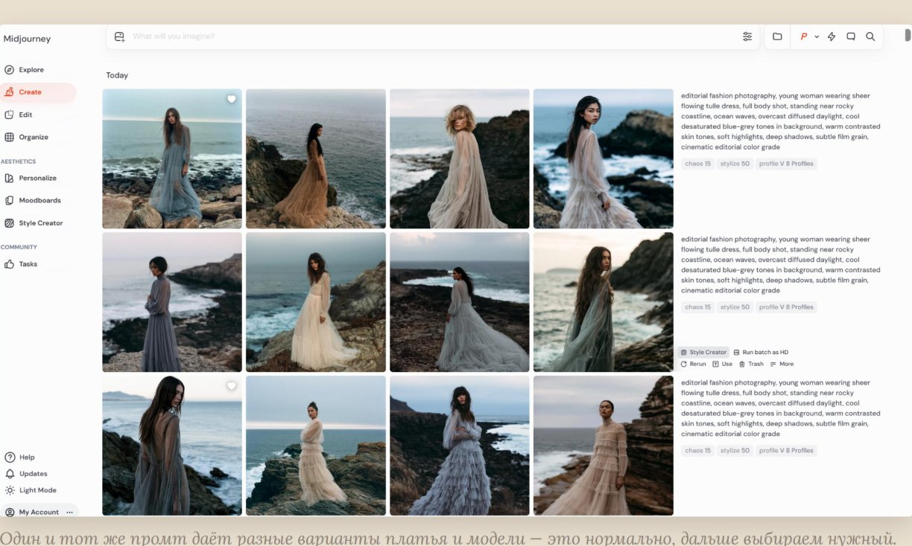

Порядок работы
- Сгенерируй базовый кадр. Формат выбери в настройках генератора.
- Выбери вариант с понятной позой, мягким светом и хорошо видимым лицом.
- Для переноса внешности прикрепи базовый кадр как Фото 1, своё селфи как Фото 2.
- Для раскадровки используй уже получившийся кадр с твоим лицом.
- Отбери разные по композиции кадры и обрежь под площадку, например 4:5 для карусели.
1. Базовый кадр
editorial fashion photography, young woman wearing sheer flowing tulle dress, full body shot, standing near rocky coastline, ocean waves, overcast diffused daylight, cool desaturated blue-grey tones in background, warm contrasted skin tones, soft highlights, deep shadows, subtle film grain, cinematic editorial color grade
2. Перенос своей внешности
Замени лицо женщины на Фото 1 на лицо с Фото 2. Сохрани в точности позу, причёску и цвет волос, наряд, освещение и фон Фото 1 без изменений. Сохрани естественную фотореалистичную текстуру кожи — не сглаживай и не переретушируй. Повтори цветокоррекцию и освещение оригинала.
3. Восемь ракурсов
Используй приложенный кадр с моим лицом как референс внешности, образа, света и цветокоррекции. Создай 8 отдельных кадров одной фотосессии. Сохрани одного человека и один образ во всей серии. editorial fashion photography, sheer cream tulle dress, rocky coastline, ocean waves, overcast diffused daylight, cool desaturated blue-grey tones in background, warm contrasted skin tones, soft highlights, deep shadows, subtle film grain, cinematic editorial color grade, windblown hair and fabric. 1. wide shot, standing at water's edge, incoming wave wrapping around ankles, fabric clinging from wet hem, looking off to the side 2. sitting on a large rock, knees drawn close, tulle pooling around her, looking toward the horizon, medium-close shot 3. reclining on rocks, one arm propping her up, dress spread across the stone surface, three-quarter angle, wind moving through fabric 4. full body, back to camera, facing the sea, dress and hair blown by wind, dramatic silhouette against water 5. walking motion, one foot lifted mid-step through shallow wave, water splashing, fabric trailing behind, side angle 6. close-up portrait, direct gaze into camera, wet windswept hair across face, tulle visible at shoulders, shallow depth of field 7. crouching low near the waterline, dress fanned out on wet sand and rock, looking down at the water, top-down angle 8. turning motion captured mid-movement, dress flaring out around her, hair and fabric in motion, low angle shot looking slightly upward
